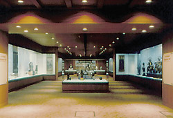

| |
The
Japanese Galleries are on the North side of the British Museum in Rooms
92-94 on
Level 5. Direct access is by lift or stairs from Montague Place. From
the Main Entrance in Great Russell Street visitors should proceed through
the Great Court and Wellcome Gallery, then use the stairs or lift. The
Section offices are on the South side, 1st floor of the White Wing.

The Japanese Galleries
(the Konica Gallery, the Main Gallery, the Urasenke Gallery) were opened
on 6 April 1990, and are used for special exhibitions of Japanese arts.
There are also
two semi-permanent exhibits which can be viewed by appointment (020)7323
8832. One is the Tea House in the Urasenke Gallery, sponsored and built
by the Urasenke Foundation, which itself forms an exhibit furnished
with modern tea utensils; and an adjacent case which always has a display
of historic Tea Ceremony wares loaned by Urasenke. (See also 'Noticeboard'
for events in the Tea House). The other semi-permanent exhibition consists
of a group of show-cases on the Level 5 entrance landing, sponsored
by Brian and Esther Pilkington, which hold rotating selections of netsuke,
inro and sword furniture from the Ingram and Hull Grundy Collections.
|
|
|
|